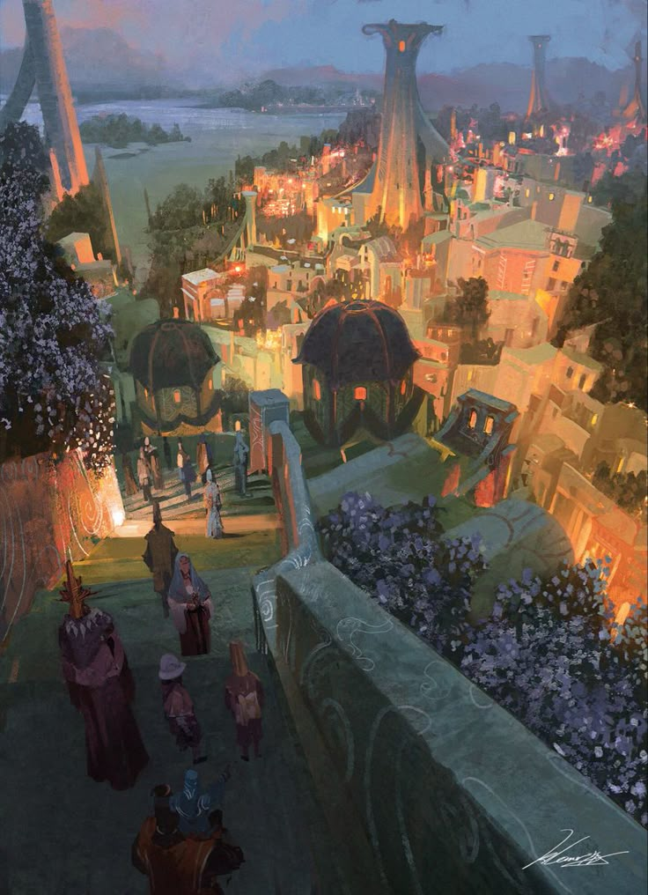
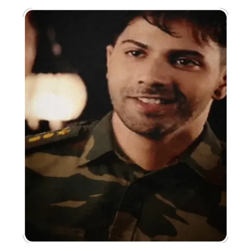

With the tireless efforts put in by 4 people, Alacrys became a haven for stories streaked with adventures of the intrepid and daring residents of the Rusty Anchor. From this fine establishment, the threads of life and the people intertwine, joining hearts and minds for rivetingly daunting and enchanting escapades. Witness the unravelling of tales, and emotions bound to the soul of the land that is, the people.
Alacrys was created as a passion project. Facilitated by DnD enthusiasts, players and Dungeon Masters alike, it was formed with the idea of living out our fantasies, seeing parts of ourselves come alive, or just to enjoy a weekend with friends. With the proliferation of people joining this campaign (34 right now, and counting), the people chose this community and made them their own. Join us as we peer into ordinary peoples' extraordinary lives, living one quest at a time.

Soumyajit "Basque" Basak